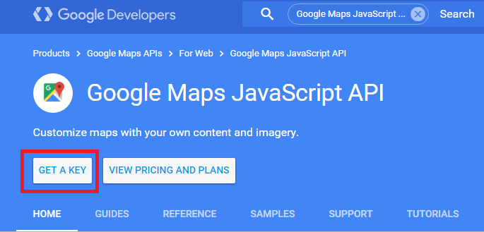
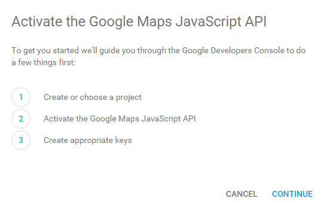
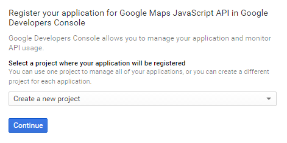
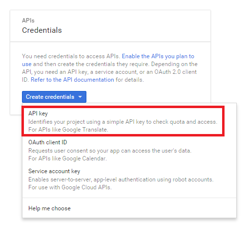
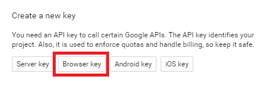
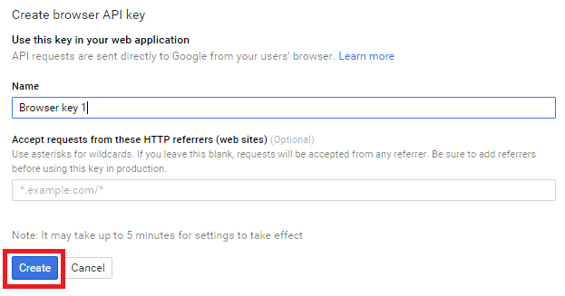

Introduction
Google offers many different API's for their different search, web and data analytic services. For this how to guide we will be focusing on the Google maps API and adding map functionality to your website. To begin, Google's documentation can be found at the following link: Google documentation. One of the nice things about Google's Maps v3 API is there is no need for an API key if you stay under 1,000 requests per day. That being said creating an API key is free and allows you to monitor and track the API usage. Once you go over a certain number of requests per day then you will be charged based on API usage. The pricing structure can be found here.
Getting an API key
Even though for the amount of requests used to create this how to guide an API key was not required the steps to get one are laid out below for completeness and in case necessary. On the main Google documentation page https://developers.google.com/maps/documentation/javascript/ Choose the following Get a Key option at the top

On the next screen Activate the Google Maps Javascript API choose Continue.

Next create a new project and choose continue.

On the credentials page choose create credentials and create a new API key.
Next choose browser key

Finally name the browser key and input any HTTP referrers to limit API requests to only your sites so no one can use your API requests.

Creating pages manually
If you prefer to not use the automatic generator, push a branch named gh-pages to your repository to create a page manually. In addition to supporting regular HTML content, GitHub Pages support Jekyll, a simple, blog aware static site generator. Jekyll makes it easy to create site-wide headers and footers without having to copy them across every page. It also offers intelligent blog support and other advanced templating features.
Authors and Contributors
You can @mention a GitHub username to generate a link to their profile. The resulting <a> element will link to the contributor’s GitHub Profile. For example: In 2007, Chris Wanstrath (@defunkt), PJ Hyett (@pjhyett), and Tom Preston-Werner (@mojombo) founded GitHub.
Support or Contact
Having trouble with Pages? Check out our documentation or contact support and we’ll help you sort it out.